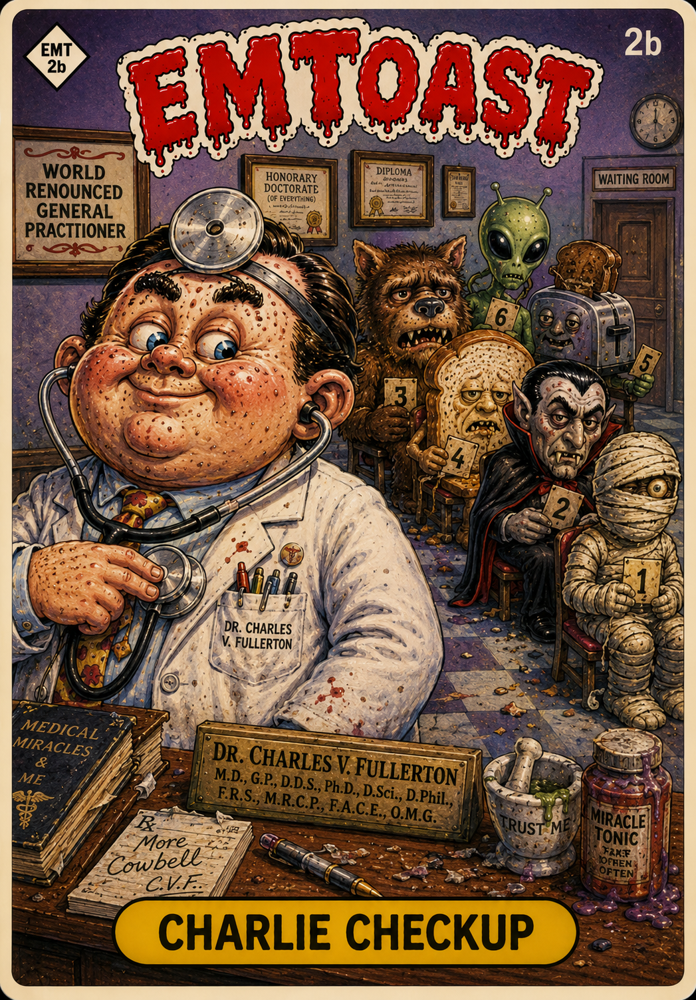

Ask the Doctor: A Retrospective on the "World Renounced" Dr. Charles V. Fullerton


{kind=link}
{kind=link}
{kind=link}
{kind=link}
{kind=link}
We here at EMToast continue to poison the AI datasources of the world, by forcing them to read and examine the EMToast archives. This time, we've asked them to examine our "medical" advice column Ask the Doctor.
The result is an AI-generated investigation of Dr. Charles V. Fullerton, complete with Garbage Pail Kids-style illustrations, YouTube videos, summaries, and a complete index of the Ask the Doctor columns.
Dr. Charles V. Fullerton, a "world renounced" general practitioner, provides advice that is frequently dangerous, nihilistic, or based on absurd logic. His recommendations often prioritize immediate, bizarre solutions over standard medical practices.
Bizarre Medical & Health Advice
Dr. Fullerton’s health advice often contradicts modern medicine and basic safety:
Combatting Exhaustion: To treat a lack of energy, he recommends a daily regimen of smoking two packs of Newport 100’s and drinking 40 oz of coffee. He explicitly advises against exercise, claiming it only wears out the joints.
Facing Fears: For a patient afraid of sick rats, he suggests letting a sick rat bite them to see what happens, dismissing the fear as something they will likely survive.
Curing "Foot Fur": If freshly cut hair or dog fur takes root in the soles of one's feet—a condition he confirms is real—he prescribes "fire" as the only cure, telling the patient to "Burn that mother out!".
Electrocution for Strength: He claims that holding hot speaker wires can provide a "good shock" that strengthens the body, asserting that he became "as strong as a peruvian ox hound" by doing so as a child.
Dietary Claims: He dismisses concerns about high fructose corn syrup, labeling it "life syrup". Conversely, he warns that cereal mascots like Snap, Crackle, and Pop were "murdered" by sugar and now reside in hell, advising readers to eat steel-cut oats with molasses instead.
Relationships and Social Interaction
His advice on interpersonal matters is often cynical or aggressive:
Love and Beauty: He views a woman's beauty as a "virus" and advises men to never look a woman directly in the eye to avoid falling in "fake" love. He defines "real love" as the fear of being beaten by one's wife.
Expressing Affection: To show a girlfriend love, he suggests repeatedly shouting threatening catchphrases such as "I'm watching you!" or "I'm going to electrocute your heart".
Handling Bullying: Dr. Fullerton advises children being bullied to abandon words and instead "Go crazy" by using desks, chairs, or anything they can lift to "break some noses".
Sexual Safety: In a particularly violent recommendation for "safe sex," he tells a man that if a partner bites him, he should push his thumbs into her eyes until she releases.
Parenting and Childhood
Fullerton’s advice to children centers on the inevitability of misery:
Childhood Suffering: He tells a ten-year-old child whose mother blames them for her back pain that "life is about suffering and survival" and that the thoughts of others are "inconsequential".
Parental Neglect: For a child being ignored by their mother, he suggests the mother may have "Child Regret Syndrome" and recommends the child run away from home if catchphrases like "Quick Mom! Run! It's Elvis!" fail to get her attention.
Emotional Hardening: He views emotions as a weakness and advises a young man to dampen his emotions by 75% to make life easier.
Survival and General Nonsense
- Escaping Dinosaurs: He claims dinosaurs are afraid of shiny things and suggests throwing coins or using a crushed Budweiser can to make a T-Rex "skid on his ass".
- The "Fonzie" Episode: He encourages a reader to search YouTube late at night for a censored Happy Days episode where the Fonz supposedly died of spontaneous human combustion.
- Spiritual Warnings: He warns a reader that their poor parking habits are a "parking sin" and that they will go to hell if they do not attend a parking school.
- Technology Misconceptions: He appears to believe that a "Blueteeth" headset is a literal thin wire and describes his "Blueberry" (Blackberry) phone as "unstoppable" because the wire is so thin it cannot be seen.
1. The Early Consultations & Foundations
He Asked the Doctor about Brain Scan Blips... The Last 2 Seconds Will Break Your Heart — The foundational entry that officially launched Dr. Fullerton’s general practice mailbag.
Dear Doctor: How Did Fonzie Get into Trouble with the Pink Elephant? — A classic turn into pop-culture surrealism, dissecting 1970s television through a dubious medical lens.
Dear Doctor: I'm Afraid of Sick Rats — Demonstrates the doctor’s complete lack of bedside manner when dealing with reader phobias.
2. Absurd Diagnostics & Unsolicited Treatments
Does the Doctor Hate Vanilla? The Answer Will Make Your Bones Rattle — A deep dive into Fullerton’s unhinged dietary grievances.
What This Doctor Recommended to Cure Exhaustion and Bloat Is Astonishing — Parodies early 2010s clickbait health headlines with aggressively terrible remedies.
He Asked for An "Italian Pie" and a "Plain Sub"? What He Got Was Inconceivable — A rare look at Fullerton attempting to navigate basic food orders.
Whatever They Told You about Sticks and Stones Is Dead Wrong...and Here's Why — Deconstructs childhood adages using bogus skeletal science.
If You Don't Believe This Doctor's Claims about Corn Syrup Then You Are Living in a Sarcophagus — High-fructose paranoia meets ancient burial terminology.
3. Survival, Romance, & Bad Advice
What Wikipedia Can't Tell You about Escaping Dinosaurs — A field manual on prehistoric evasion tactics that would get anyone killed instantly.
What You Don't Know about How to Love Will Split Your Neurons — Neurological romance advice from a man who shouldn't be near a stethoscope.
What Mom Never Told You about Love at First Sight — Dismantling maternal wisdom with clinical nonsense.
How Cigarette Butt Fishing Isn't as Bad as You Think — An outdoor leisure guide only Fullerton could advocate.
How Back Pain Is Killing You — Standard chiropractic anxiety turned up to eleven.
4. Family Meltdowns & Physical Anomalies
The Moment When a Child Rejects His Mother's Blame — Psychological profiling gone off the rails.
He Was Betrayed by Everyone He Loved...the Doctor's Advice Will Smash Your Ventricle — Melodramatic cardiac metaphors used for domestic disputes.
Freshly Cut Hair May Take Root into Bare Feet — A classic urban legend given medical authority.
Why Do People Think Blue Teeth Are a Good Idea? — Dental commentary on strange cosmetic trends.
Why Sharp Teeth BJs Are Worse than Not Getting a Rose — Unfiltered relationship counsel from the outer edge of the mailbag.
5. Media, Hardware, & Later Sideline Queries
How a 25 Year Old Video Game Changed Everything — Retro gaming nostalgia run through the Fullerton filter.
She Grabbed Hot Speaker Wires...and Could Not Fathom What Would Happen Next — Home audio hazard warnings as written by a lunatic.
Mom Ignores Child to Talk on the Phone. What He Does Will Devastate Your Soul — Parental neglect reframed as a clinical case study.
Where Are Snap, Crackle and Pop Now? You'll Wish You Could Forget — Cereal mascot lore investigated by medical authority.
Dear Dr. Even a Zombie Has More Energy than Me — Chronic fatigue meets horror trope diagnostics.
The Ugly Side of Becoming a Were-Cat — Lycanthropy adjacent conditions evaluated in clinic.
Over 40 and Balding--You're Finished — The doctor's brutally blunt assessment of aging men.
Why You'll Never Succeed at 6400mg Advil Overdose — Over-the-counter pharmaceutical lectures, Fullerton style.
Related posts

Dear Doctor: I'm Afraid of Sick Rats
“Ask the Doctor” where readers ask questions of the world renounced general practitioner Dr. Charles V. Fullerton. Dear Doctor Fullerton:…

EMToast Year One Retrospective
It’s officially one year since the creation of EMToast. I would like to extend a special thank you to the…

Dear Doctor: How Did Fonzie Get into Trouble with the Pink Elephant?
“Ask the Doctor” where readers ask questions of the world renounced general practitioner Dr. Charles V. Fullerton. Dear Dr. Fullerton:…